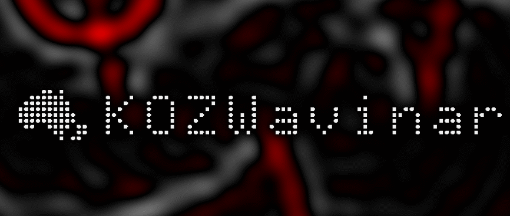

KOZWavinar is the new online conference series for the KOZWaves community. It is inspired by the UK Wavinar.
Find information on past and future KOZWavinars below.
Ross McPhedran, University of Sydney
Title and abstract to appear
Ludmila Adam, University of Auckland
Title and abstract to appear
Hidetaka Houtani, University of Tokyo
Title and abstract to appear